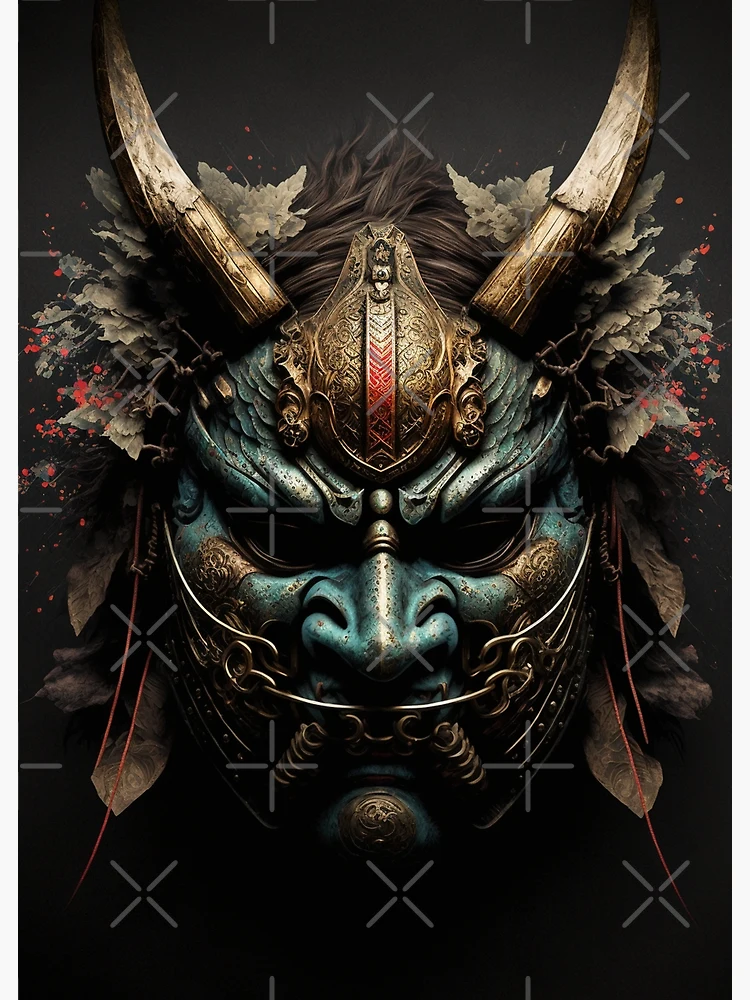
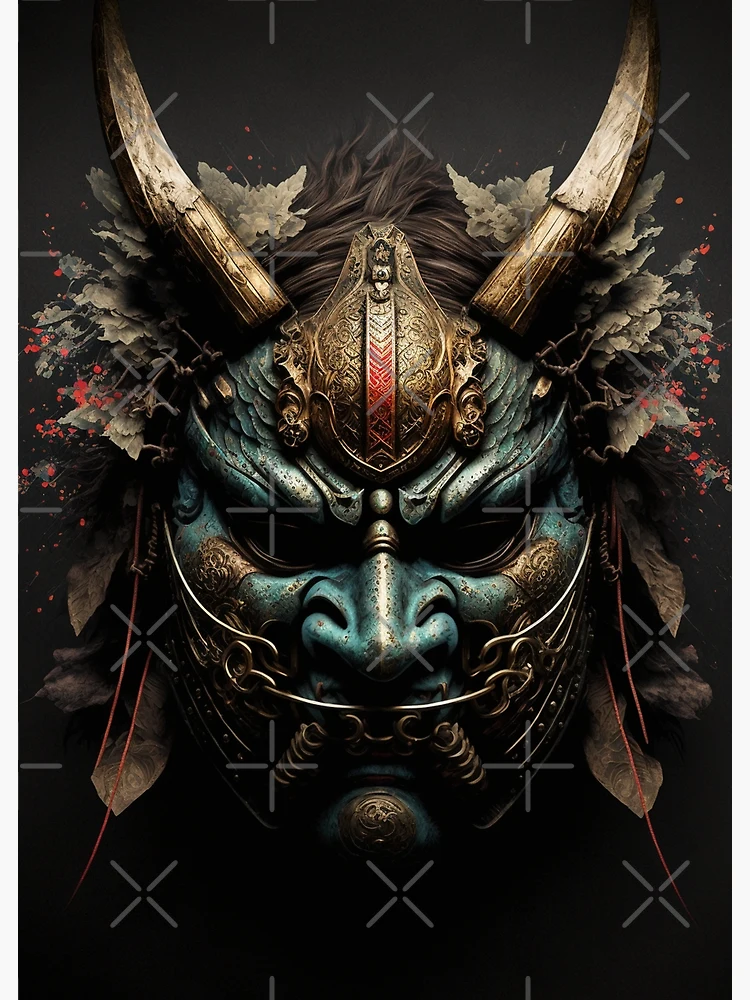

Découvrez la Richesse de la Culture Japonaise

LA CULTURE DU JAPON EST UNE FUSION UNIQUE DE TRADITIONS ANCIENNES ET DE MODERNITÉ. EXPLOREZ LES ARTS, LA CALLIGRAPHIE, LA CÉRÉMONIE DU THÉ, LES FESTIVALS ET BIEN PLUS ENCORE.

LA CULTURE DU JAPON EST UNE FUSION UNIQUE DE TRADITIONS ANCIENNES ET DE MODERNITÉ. EXPLOREZ LES ARTS, LA CALLIGRAPHIE, LA CÉRÉMONIE DU THÉ, LES FESTIVALS ET BIEN PLUS ENCORE.
